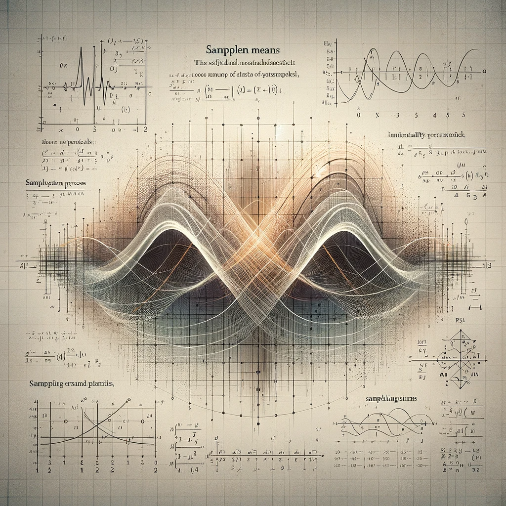
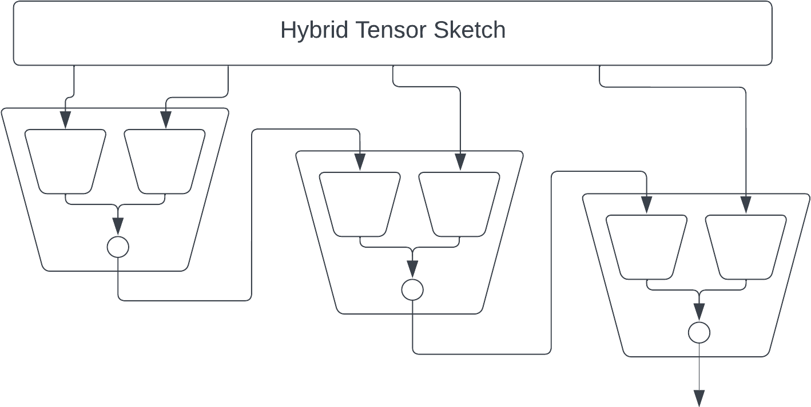
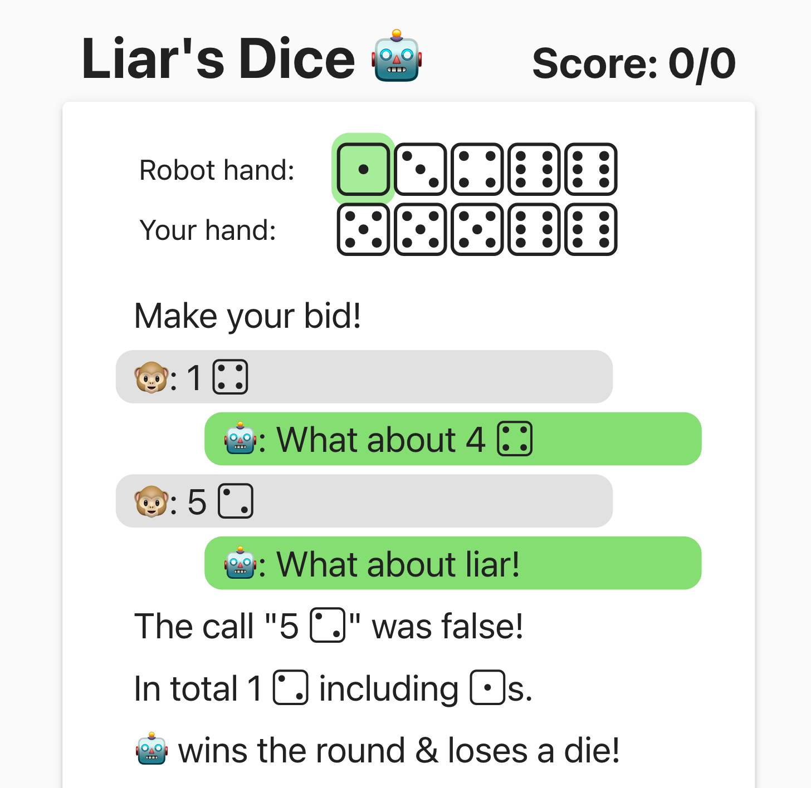
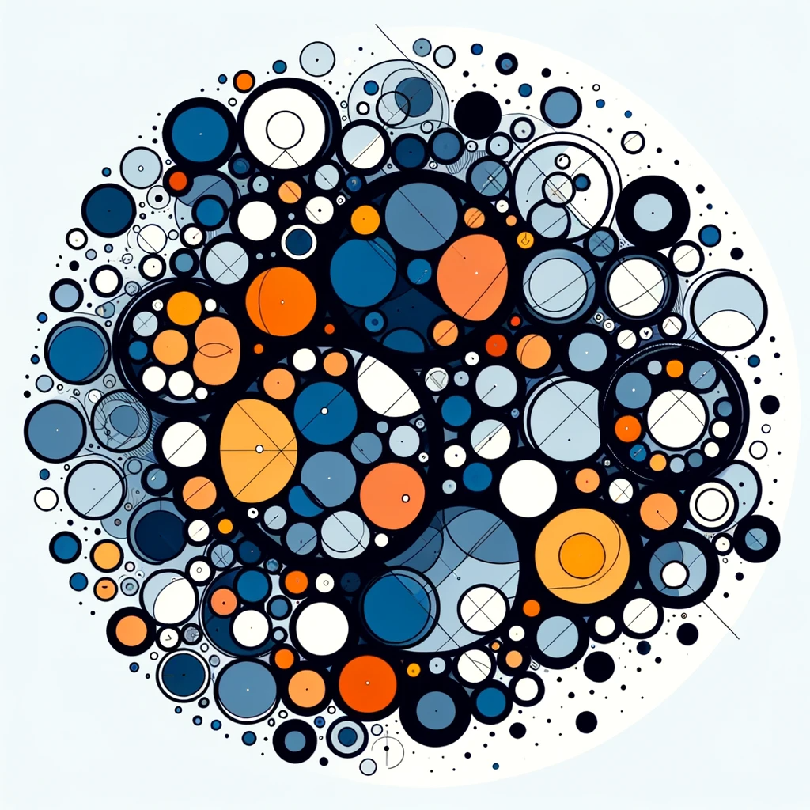

Blog

Analysis of Ornstein-Uhlenbeck Process for Linear Systems
2024-01-31 - 1 min
This blog post delves into the Ornstein-Uhlenbeck (OU) process and its application in the analysis of linear systems. We explore how the OU process, when applied to a Positive Semi-Definite (PSD) matrix and a specific vector, leads to more efficient and accurate sampling strategies.
ZipLm with Beam Search, BPE and Progressive Compression
2023-08-28 - 1 min
ZipLM uses Gzip to create a language model, however it is quite bad. This post shows how to use beam search to improve the output of ZipLM. When sampling sentences from "The Great Gatsby," the raw model produces near-gibberish. However, implementing beam search yields increasingly coherent sentences as the beam width increases, although performance is still poor compared to older models.

Convert Einsum to Tensor Network
2023-01-01 - 1 min
A technical guide on converting Einstein summation to tensor network operations.

Liar’s Dice by Self-Play
2022-01-01 - 1 min
I’ve been meaning to learn about AIs for games like Poker or Liar’s Dice for a while. Recently while reading Deepmind’s article Player of Games, I thought I might be able to make something really simple that works well enough to be fun. “It shouldn’t take more than an afternoon,” I thought. Of course, I ended up spending much more time on it, but it did turn out to be fun and very simple.

An Evolutionary Data Structure for Sets
2020-01-01 - 1 min
I recently published a preprint, together with Jakob Knudsen, describing a new, optimal data structure for set similarity search. An interesting way to look at this is as an Evolutionary Algorithm (aka. Genetic Algorithm). We think it's probably the first time the provably best way to solve a problem has been evolutionary. This post won't go deep into the mathematics, but will contain code samples and some fun gadgets I built to simulate it.
Another Tail of the Hypergeometric Distribution
2015-12-08 - 1 min
This blog post sheds light on the less-discussed sampling without replacement scenario, its implications in algorithm analysis, and how it compares with its more famous counterpart, the binomial distribution.